Environmental sustainability
Food security across the whole food cycle, and a biodegradable alternative to the plastic cup.
Spread:Seed
Founder & President · 2023–presentA youth-led initiative empowering high school students to tackle food security and environmental challenges as researchers and changemakers. Our goal is sustainability at every stage, from cutting food waste to supporting sustainable agriculture.
Visit Spread:Seed websiteMarine-derived biopolymers for single-use cups
Developed biodegradable single-use cups from seaweed-based biopolymers, testing kelp and seaweed blends for flexibility and structural integrity. A kelp–gelatin blend proved the most durable, a sustainable alternative to conventional plastic.
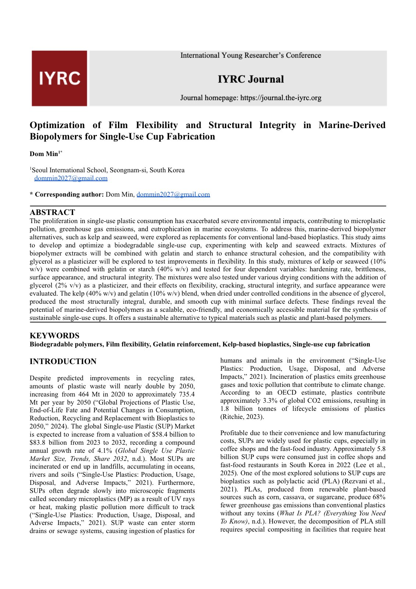
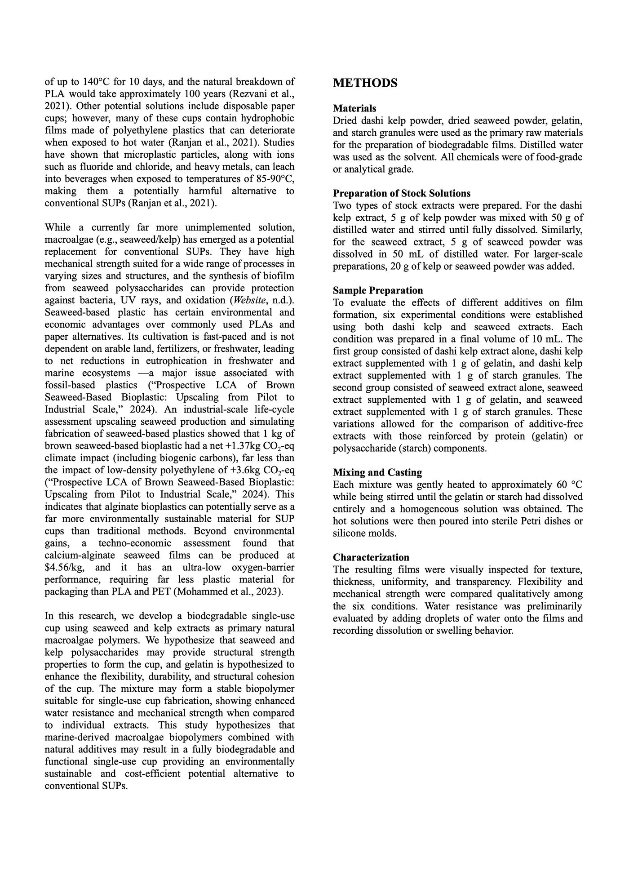
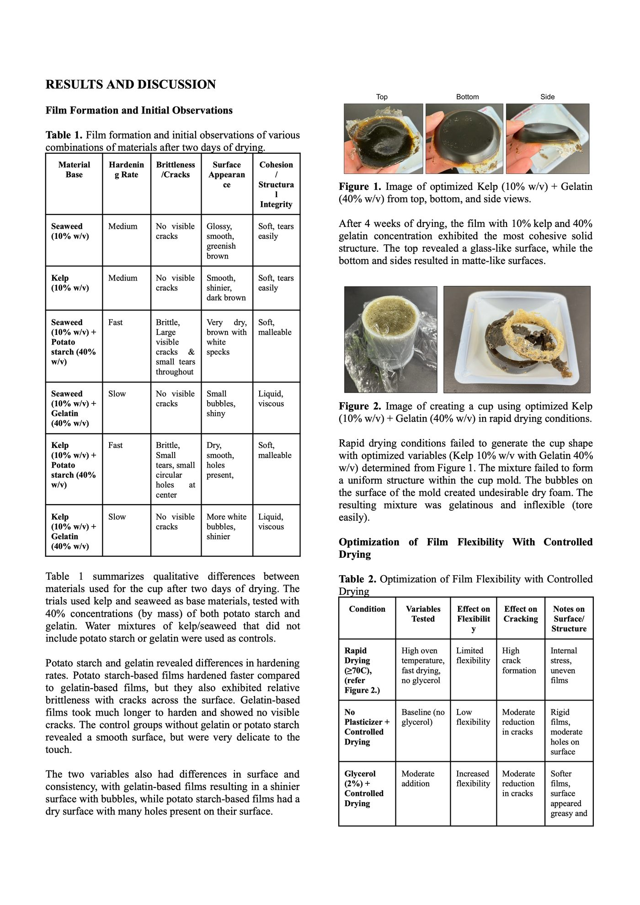
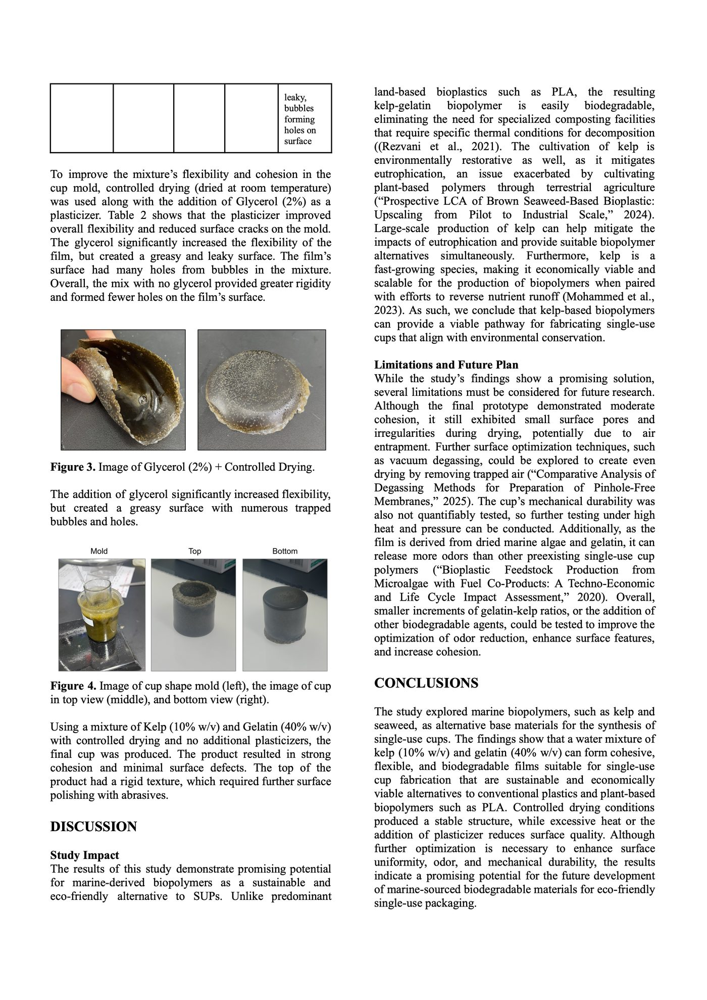
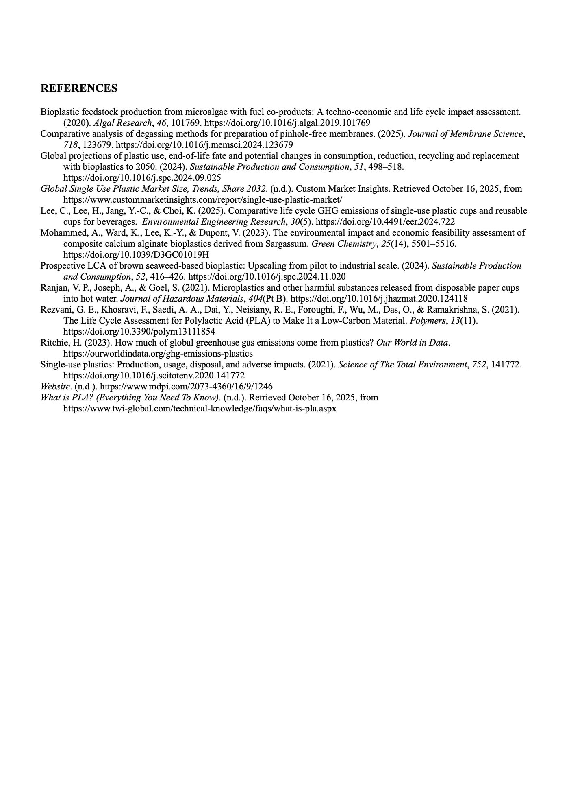
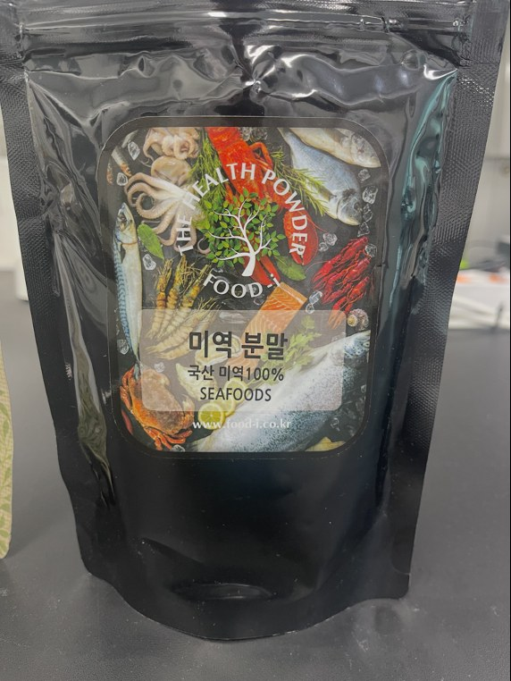
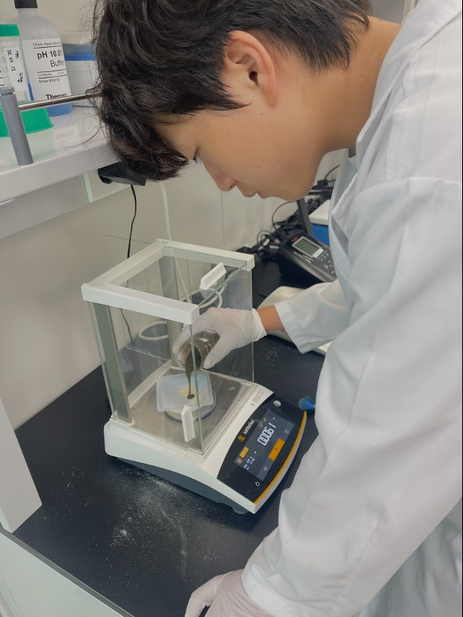
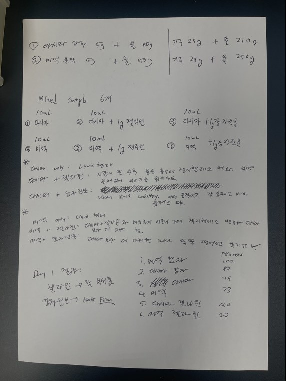
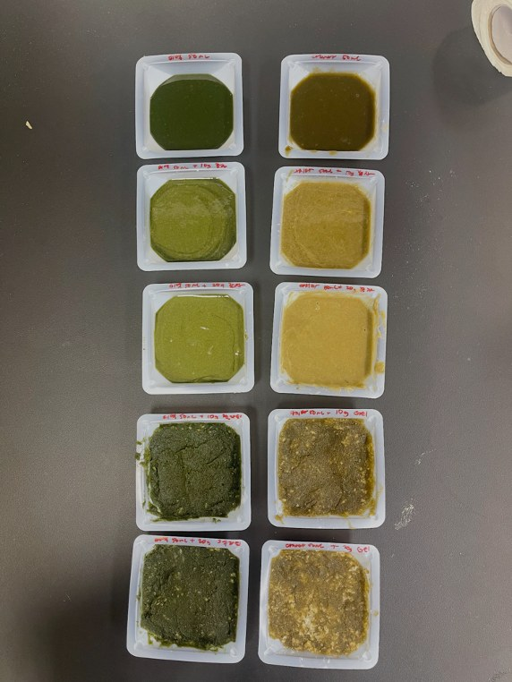
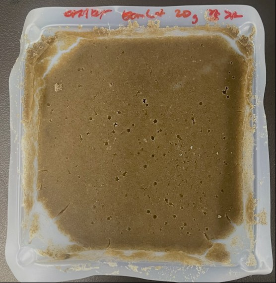
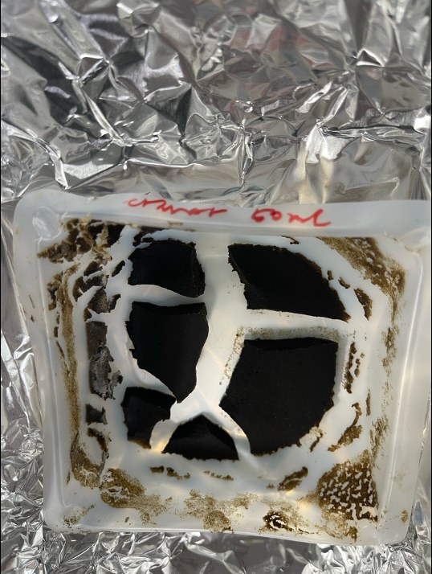
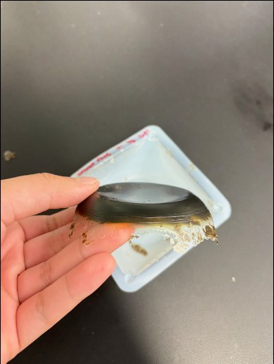
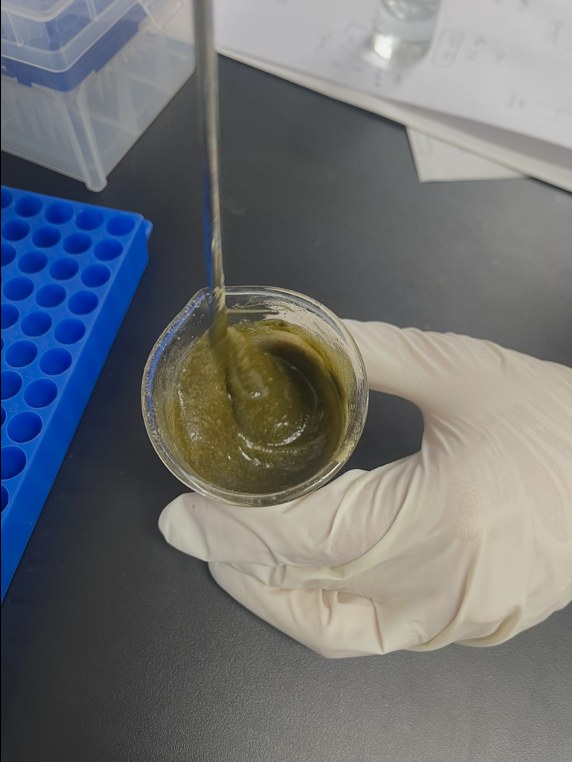
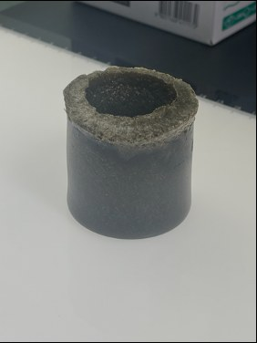